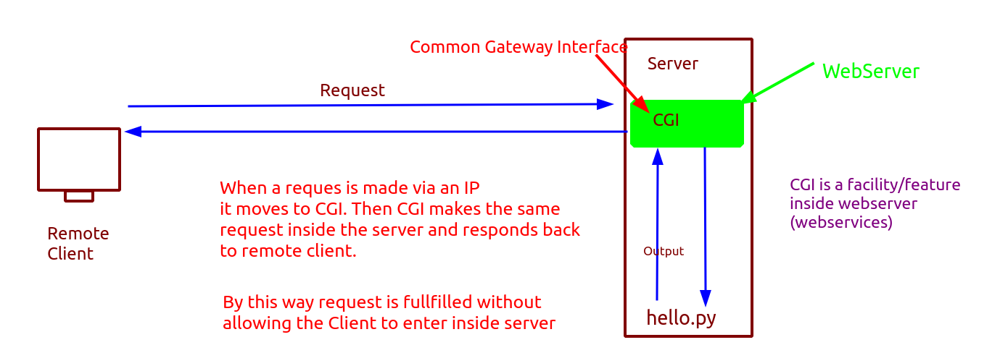

Task_Sol
1:Scenerio: There is a python file in your guest OS now you don't know the password to login into your guest OS Only your guest OS is connected via networking and you want to execute the file.
OR
Let's say there is a company which got one file in it's server now they allow their outsiders to come and execute the file and get the output but the user can't login into server(as they can delete/update or add another file). So we need something this kind of system where no creds are shared but availability of file is maintained.
Concept 
So we'll be using CGI facility to solve the problem. To use the CGI we need to enable the webservices in guest OS.
We'll be using Apache for configuring the webserver.
Setup Open the guest OS and install httpd in it. //httpd is a product of apache
systemctl restart httpd
Note: In apache servers CGI feature is by default enabled
Now the only files accessible via CGI is in /var/www/html so you need to place the files inside this.
Access it using a browser in the client machine connected to server.
http://ServerIP/file.py
Problem:But the problem here is that now we can only see the content but can't run it. that is we are not able to execute it.
Sol: Place your files inside /var/www/cgi-bin. Now if we again access file via browser
This time run as http://ServerIP/cgi-bin/file.py
But again it shows internal server error
Prob1: We need to make the program executable
Sol: Make chmod +x file.py
Prob2: We need to tell webserver to open the file.py with python3 interpreter
Sol: In first line of python script add #!/usr/bin/python3
Prob3: Now we need to tell the program that the output needs to be sent back to client instead of printing it on terminal
Sol: In second line add print("content-type: text/html")
print()
Basically its stating that when the output is sent back to browser then from content-type that the received thing is a text and will render accordingle in presentation layer. We added extra print() to differentiate between header and body.
Now again try visiting
http://ServerIP/cgi-bin/file.py and it will work.
~~~~~~~~~~~~~~~~~~~~~~~~~~~~~~~~~
Framerate
threejs